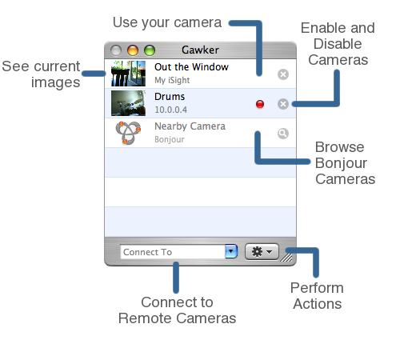
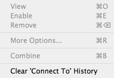

Gawker Basics
Thank you for your interest in Gawker! Hopefully you will find it useful and easy to use. This page will explain the basics of Gawker.

Let's cover each of the elements of the Main Window. Gawker is built around the idea of cameras. Each camera currently available is represented as a row in the camera list. The Gear button reflects the "Camera" menu in the menu bar and is used to perform actions on the selected camera(s). The "Internet Connect" field is used to connect to remote cameras by entering in their hostname or IP address and the pull-down keeps a history of recent connection attempts.
Camera List
The camera list has a row for each available camera that can be viewed. A camera is simply an image source
whose images you can record into a movie or just watch and can be your own iSight, DV Camera,
USB Webcam (supported by macam), Desktop,
a camera you've connected to remotely, or a combination of any of these. If you have a camera that is physically
hooked up to you computer, it will appear at the top of your camera list. Cameras connected while Gawker is running will be
automatically detected and added to the camera list. Other cameras will appear if you have connected to an Internet Camera or if
Bonjour Cameras are nearby.
Each camera can be in either an enabled or disabled state. This can be changed
by clicking the circular button on the far right of that camera row or by selecting it and using the "Enable Camera"
item under the Camera/Gear menu.
When a camera is enabled, you can open it by double-clicking on its row or by selecting it and using the "Open Camera"
item under the Camera/Gear menu. This will open the window for that camera, showing the current image for the camera and
allowing you to record the cameras images into a movie. Opening and closing the window does not change the camera's
state. If you try and open a camera that is disabled, Gawker will ask if you would like to enable it.
Gear Menu/Camera Menu
The Gear Menu on the main window and Camera Menu in the title bar are actually the same menu, you can just access it two different ways.

Only items that are relevant to the camera(s) selected in the camera list will be activated.
Menu item availability
- The "More Options..." item will always be available and is explained in detail in More Camera Options in Gawker.
- "Combine" will only be available if multiple cameras are highlighted in the Camera List. This item is explained fully in Using Gawker to Combine Cameras.
- "Remove" removes a camera from the list and will only be available if the selected camera is an Internet Camera or Combined Camera.
- "Clear 'Connect To' History" is always available and is used to clear the history from the "Connect To" pull-down.
Connect To Field
If someone you know has shared a camera using Gawker, you can type in their hostname or IP address into the
Connect To field and hit Return to connect to their camera and add it to the camera list.
Once it is added, it can be enabled and disabled, viewed and recorded. It can
be removed using the "Remove" item under the Gear/Camera Menu.
See also
Using Gawker to Record a Movie
Camera Options in Gawker
Using Gawker to Share your Camera
Using Gawker to Combine Cameras